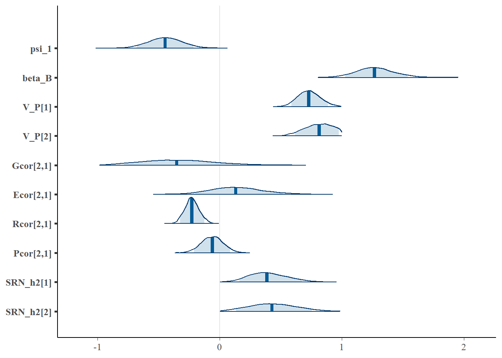

3 Between partner SAM
Here we modify the within partner SAM for a between partner study design without repeated measures within partners. As explained in the main text [Martin and Jaeggi (2021); see Eq 3.2], this model can be considered as a simplification of the within partner model to remove feedback effects within partners (i.e. \(t=1\)). We therefore avoid repeating the detailed commentary on the formal and computational aspects of the model provided in the previous chapter. In contrast to within partner SAM, which fails to properly estimate assortment (2.6), a between partner SAM can be used to effectively partition assortment on SRN parameters using within-individual centering.
The between partner SAM for a measurement \(i\) of aggression \(z_{ijt=1}\) in focal individual \(j\) during a single interaction period \(t=1\) is given by
\[z_{ijt=1} = \mu_0 + \eta_{ijt=1} + \epsilon_{ijt=1}\] \[\eta_{ijt=1} = \mu_j + \left( \psi_1 + \psi_j \right)\mu_k'\] \[\mu_j = \mu_{\mathrm{A}j} + \mu_{\mathrm{E}j}, \quad \psi_j = \psi_{\mathrm{A}j} + \psi_{\mathrm{E}j}\] Note that the SRN measurement simply reduces to the residual trait value \(\epsilon_{ijt=1}\) because there is no temporal information for partitioning residual feedback effects. When there individuals are non-randomly distributed across social partners (e.g. due to assortment), the SRN trait value should instead be decomposed into within \(\eta_{W}\) and between \(\eta_{B}\) partner components to adjust for unbalanced sampling
\[\eta_{Wijt=1} = \mu_j + \left( \psi_1 + \psi_j \right) \left( \mu_k' - \bar{\mu}'_K \right)\] \[\eta_{Bijt=1} =\left( \psi_1 + \psi_j \right) \bar{\mu}'_K \] where \(\bar{\mu}'_K\) is the average SRN intercept of an individual’s social partners. To appropriately adjust the intrinsic SRN parameters for the between-partner component, we need to introduce an additional regression parameter \(\beta_{B}\) so that
\[z_{ijt=1} = \mu_0 + \eta_{Wijt=1} + \beta_{B}\eta_{Bijt=1} + \epsilon_{ijt=1}\]
The equivalent specification can be given for the social partner’s aggression measure \(z_{ikt=1}'\)
\[z_{ikt=1}' = \mu_0 + \eta_{Wikt=1}' + \beta_{B}\eta_{Bikt=1}' + \epsilon_{ikt=1}'\] \[\eta_{Wikt=1}' = \mu_k' + \left( \psi_1 + \psi_k' \right) \left( \mu_j - \bar{\mu}_J \right) \] \[\eta_{Bikt=1}' = \mu_k' + \left( \psi_1 + \psi_k' \right) \bar{\mu}_J\] \[\mu_k' = \mu_{\mathrm{A}k}' + \mu_{\mathrm{E}j}', \quad \psi_k' = \psi_{\mathrm{A}k}' + \psi_{\mathrm{E}k}'\] The random effects are assumed to be well-described by multivariate normal distributions.
\[\begin{bmatrix} \boldsymbol{\mu_{\mathrm{A}}}, \boldsymbol{\mu'_{\mathrm{A}}},\boldsymbol{\psi_{\mathrm{A}}},\boldsymbol{\psi}'_{\mathrm{A}} \end{bmatrix}^{\mathrm{T}} \sim \mathrm{MVNormal}(\boldsymbol{0}, \boldsymbol{\mathrm{G}} \otimes \boldsymbol{\mathrm{A}} ) \] \[\begin{bmatrix} \boldsymbol{\mu_{\mathrm{E}}}, \boldsymbol{\mu'_{\mathrm{E}}},\boldsymbol{\psi_{\mathrm{E}}},\boldsymbol{\psi}'_{\mathrm{E}} \end{bmatrix}^{\mathrm{T}} \sim \mathrm{MVNormal}(\boldsymbol{0}, \boldsymbol{\mathrm{E}} \otimes \boldsymbol{\mathrm{I}} ) \] \[\begin{bmatrix} \boldsymbol{\epsilon}, \boldsymbol{\epsilon}' \end{bmatrix}^{\mathrm{T}} \sim \mathrm{MVNormal}(\boldsymbol{0}, \boldsymbol{\mathrm{\Sigma}} ) \] We also assume that the social reaction norm (SRN) intercept and slope (co)variances are equivalent for focal (\(\boldsymbol{\mu},\boldsymbol{\psi}\)) and social partners (\(\boldsymbol{\mu}',\boldsymbol{\psi}'\)). The \(\boldsymbol{G}\) matrix can therefore be reduced to a 2x2 matrix for all individuals in the population
\[\boldsymbol{\mathrm{G}}= \begin{bmatrix} \mathrm{var([\boldsymbol{\mu},\boldsymbol{\mu}'])} & \mathrm{cov([\boldsymbol{\mu},\boldsymbol{\mu}'],[\boldsymbol{\psi},\boldsymbol{\psi}'])} \\ \mathrm{cov([\boldsymbol{\psi},\boldsymbol{\psi}'],[\boldsymbol{\mu},\boldsymbol{\mu}'])} & \mathrm{var([\boldsymbol{\psi},\boldsymbol{\psi}'])} \end{bmatrix}\]
The residual matrix \(\boldsymbol{\Sigma}\) estimates the association among focal and social partners’ residuals.
\[\boldsymbol{\Sigma}= \begin{bmatrix} \mathrm{var(\boldsymbol{\epsilon})} & \mathrm{cov}(\boldsymbol{\epsilon},\boldsymbol{\epsilon}') \\ \mathrm{cov}(\boldsymbol{\epsilon}',\boldsymbol{\epsilon}) & \mathrm{var(\boldsymbol{\epsilon'})} \end{bmatrix}\] This model is, therefore, appropriate for situations where the distinction between focal and partner is semi-arbitrary, e.g. when measuring within-sex interactions or when males and females exhibit similar patterns of phenotypic variation. In this case, we make the latter assumption for simplicity. To account for differences between the responses of focal individuals and social partners, the model can simply be extended with additional parameters, e.g. specifying separate \(G_M\) and \(G_F\) matrices for males and female respective genetic (co)variances and so on.
3.1 Simulate data
We now need to simulate interactions across multiple partners. Fortunately, we follow the same basic approach as the previous chapter, including use of the the custom pedfun() function introduced in Ch. 1.5 for generating a genetic VCV. For heuristic purposes, we can consider our simulation as capturing interactions and assortment of each individual with four lifetime partners.
library(mvtnorm)
#common settings
I_partner = 4 #partners/individual
I_obs = 1 #observations/individual/seasonal partner
I_sample = I_partner*I_obs #samples/individual
#population properties
I = 300 #total individuals for simulation
popmin=400
popmax=600
ngenerations = 10
nids<-sample(popmin:popmax, ngenerations, replace=TRUE) #N / generation
epm = sample(seq(0.15, 0.25,by=0.05),1) #extra-pair mating
nonb = sample(seq(0.4,0.6,by=0.05),1) #proportion of non-breeding / generation
#relatedness matrix
A_mat <- pedfun(popmin=popmin, popmax=popmax, ngenerations=ngenerations,
epm=epm, nonb=nonb, nids=nids, I=I, missing=FALSE)
#####################################################################
#Parameter values
#####################################################################
alpha_0 = 0 #global intercept
psi_1 = -0.5 #population interaction coefficient
phi = 0.5 #residual feedback coefficient (epsilon_j ~ epsilon_t-1k)
SD_intercept = 0.3 #standard deviation of SRN intercepts
SD_slope = 0.3 #SD of SRN slopes
r_alpha = 0.3 #assortment coefficient (expressed as correlation)
r_G = 0.3 #genetic correlation of random intercepts and slopes
r_E = 0.3 #environmental correlation
r_R = -0.3 #residual effect correlation (epsilon_tj = epsilon_tk)
V_G = 0.3 #genetic variance of REs
V_E = 0.3 #genetic variance of REs
res_V = 1
#Random effect correlations
G_cor <- matrix(c(1,r_G,r_G,1), nrow=2, ncol=2) #mu_A, beta_A
G_sd <- c(sqrt(V_G),sqrt(V_G)) #G effect sds
G_cov <- diag(G_sd) %*% G_cor %*% diag(G_sd)
E_cor <- matrix(c(1,r_E,r_E,1), nrow=2, ncol=2) #mu_E, beta_E
E_sd <- c(sqrt(V_E),sqrt(V_E)) #E effect sds
E_cov <- diag(E_sd) %*% E_cor %*% diag(E_sd)
#matrices
G_block <- G_cov %x% A_mat
E_block <- E_cov %x% diag(1,I)
#generate correlated REs
Gvalues <- rmvnorm(1, mean=rep(0,I*2), sigma=G_block)
G_val = data.frame(matrix(Gvalues, nrow=I, ncol=2))
cor(G_val)## X1 X2
## X1 1.0000000 0.3884289
## X2 0.3884289 1.0000000Evalues <- rmvnorm(1, mean=rep(0,I*2), sigma=E_block)
E_val = data.frame(matrix(Evalues, nrow=I, ncol=2))
cor(E_val)## X1 X2
## X1 1.0000000 0.2761548
## X2 0.2761548 1.0000000#combine temporary object for all SRN parameters
#use shorthand mu = 0, psi = 1
P = cbind(G_val,E_val)
colnames(P) = c("A0", "A1", "E0", "E1")
#individual phenotypic REs
#use shorthand mu = 0, psi = 1
P$P0 = P$A0 + P$E0
P$P1 = P$A1 + P$E1
#add ID
P$ID = seq(1:I)The assortment procedure is fundamentally the same but now considers multiple partners.
library(dplyr)
library(MASS)
pairs = list()
for (j in 1:I_partner){
#male RN intercept (x I_partner for multiple lifetime partners)
sort.m <- data.frame(P0_m = P$P0[1:(I/2)], ID_m = (1:(I/2)) )
sort.m<-sort.m[order(sort.m[,"P0_m"]),]
#female phenotypic RN slopes
sort.f <- data.frame(P0_f = P$P0[(I/2 + 1):I], ID_f = ((I/2+1):I) )
sort.f<-sort.f[order(sort.f[,"P0_f"]),]
#generate random dataset with desired rank-order correlation
temp_mat <- matrix(r_alpha, ncol = 2, nrow = 2) #cor of male and female values
diag(temp_mat) <- 1 #cor matrix
#sim values
temp_data1<- mvrnorm(n = I/2, mu = c(0, 0), Sigma = temp_mat, empirical=TRUE)
#ranks of random data
rm <- rank(temp_data1[ , 1], ties.method = "first")
rf <- rank(temp_data1[ , 2], ties.method = "first")
#induce cor through rank-ordering of RN vectors
cor(sort.m$P0_m[rm], sort.f$P0_f[rf])
#sort partner ids into dataframe
partner.id = data.frame(ID_m = sort.m$ID_m[rm], ID_f = sort.f$ID_f[rf])
partner.id = partner.id[order(partner.id[,"ID_m"]),]
#add to list
pairs[[j]] = partner.id
}
partner.id = bind_rows(pairs)
partner.id = partner.id[order(partner.id$ID_m),]
#put all dyads together
partner.id$dyadn = seq(1:nrow(partner.id))
#add values back to dataframe (male and joint)
partner.id$P0m <- P$P0[match(partner.id$ID_m,P$ID)]
partner.id$P0f <- P$P0[match(partner.id$ID_f,P$ID)]
partner.id$P1m <- P$P1[match(partner.id$ID_m,P$ID)]
partner.id$P1f <- P$P1[match(partner.id$ID_f,P$ID)]
partner.id$A0m <- P$A0[match(partner.id$ID_m,P$ID)]
partner.id$A0f <- P$A0[match(partner.id$ID_f,P$ID)]
partner.id$A1m <- P$A1[match(partner.id$ID_m,P$ID)]
partner.id$A1f <- P$A1[match(partner.id$ID_f,P$ID)]
partner.id$E0m <- P$E0[match(partner.id$ID_m,P$ID)]
partner.id$E0f <- P$E0[match(partner.id$ID_f,P$ID)]
partner.id$E1m <- P$E1[match(partner.id$ID_m,P$ID)]
partner.id$E1f <- P$E1[match(partner.id$ID_f,P$ID)]
#check correlation again
cor(partner.id$P0m, partner.id$P0f)## [1] 0.3002027We can now calculate observed aggression measures for a single observation within each dyad.
#number of dyads
ndyad = nrow(partner.id)
pair_df = partner.id #congruent with repeated measures code
#correlated residuals between male and females
R_cor <- matrix(c(1,r_R,r_R,1), nrow=2, ncol=2)
res_sd <- sqrt(res_V)
R_cov <- diag(c(res_sd,res_sd)) %*% R_cor %*% diag(c(res_sd,res_sd))
res_ind<-data.frame(rmvnorm(nrow(pair_df), c(0,0), R_cov))
pair_df$resAGm = res_ind$X1
pair_df$resAGf = res_ind$X2
#add interaction number
pair_df$turn = rep(1,ndyad)
#males
#eta_j{t=1} = mu_j + (psi + psi_j)*mu_k
pair_df[pair_df$turn==1,"eta_m"] = pair_df[pair_df$turn==1,"P0m"] +
(psi_1 + pair_df[pair_df$turn==1,"P1m"])*(pair_df[pair_df$turn==1,"P0f"])
#females
#eta_k{t=1} = mu_k +(psi + psi_k)*mu_j
pair_df[pair_df$turn==1,"eta_f"] = pair_df[pair_df$turn==1,"P0f"] +
(psi_1 + pair_df[pair_df$turn==1,"P1f"])*(pair_df[pair_df$turn==1,"P0m"])
#add intercept and residuals (other fixed effects could be added here as well)
pair_df$AG_m = alpha_0 + pair_df$eta_m + pair_df$resAGm
pair_df$AG_f = alpha_0 + pair_df$eta_f + pair_df$resAGf
#create indices for STan
Im = I/2 #number of males
If = I/2 #number of females
N_sex = (I/2)*I_partner #total observations per sex
idm<-pair_df$ID_m #male ID
idf<-pair_df$ID_f #female ID
idf<-idf - Im #within female vector
#all partners for each individual
#partner IDs for male individuals
partners_m<-data.frame(idfocal = rep(1:(I/2)), #all partners ID
partner1 = NA, partner2 = NA, partner3 = NA, partner4 = NA)
for(i in 1:(I/2)){partners_m[i,c(2:5)] <-partner.id[partner.id$ID_m==i,"ID_f"]}
#partner IDs for female individuals
partners_f<-data.frame(idfocal = rep((I/2+1):I), #all partners ID
partner1 = NA, partner2 = NA, partner3 = NA, partner4 = NA)
for(i in (I/2+1):I){partners_f[i-(I/2),c(2:5)] <-partner.id[partner.id$ID_f==i,"ID_m"]}
#data prep for Stan
stan_data <-
list(N_sex = N_sex, I = I, Im=Im, If = If, idm = idm, idf = idf, partners_m = partners_m, partners_f = partners_f,
AG_m = pair_df$AG_m, AG_f = pair_df$AG_f, time = pair_df$turn, A = A_mat)It may also be of interest to calculate the true average partner values that we’ll need to center the statistical model.
#calculate mean partner phenotype for each subject
#average female for male partners
mean_0m <- aggregate(P0f ~ ID_m, mean, data = partner.id)
names(mean_0m)[2] <- "meanP0m"
mean_1m <- aggregate(P1f ~ ID_m, mean, data = partner.id)
names(mean_1m)[2] <- "meanP1m"
partner.id$meanP0m <- mean_0m$meanP0m[match(partner.id$ID_m,mean_0m$ID_m)]
partner.id$meanP1m <- mean_1m$meanP1m[match(partner.id$ID_m,mean_1m$ID_m)]
#average male for female partners
mean_0f <- aggregate(P0m ~ ID_f, mean, data = partner.id)
names(mean_0f)[2] <- "meanP0f"
mean_1f <- aggregate(P1m ~ ID_f, mean, data = partner.id)
names(mean_1f)[2] <- "meanP1f"
partner.id$meanP0f <- mean_0f$meanP0f[match(partner.id$ID_f,mean_0f$ID_f)]
partner.id$meanP1f <- mean_1f$meanP1f[match(partner.id$ID_f,mean_1f$ID_f)]For empirical data where the true partner values are unknown, we won’t want to average raw partner values subject to measurement error, but instead estimate them directly in our Stan model.
3.2 Estimate the model
To code the model, we begin by simplifying the within partner model to remove SRN and residual feedback from the male and female responses, and then we expand it by adding new code for the within-individual centering procedure.
write("
data {
//indices and scalars used for model specification
int<lower=1> N_sex; //total aggression observations per sex (I/2 * 4 lifetime partners)
int<lower=0> I; //total individuals (M + F)
int<lower=0> Im; //number of males
int<lower=0> If; //number of females
int<lower=1> idm[N_sex]; //index of male AG observations (of length N_sex)
int<lower=1> idf[N_sex]; //index of female AG observations
int<lower=1> partners_m [Im,5]; //index of male partner IDs, first column is focal ID (1 + 4 IDs)
int<lower=1> partners_f [If,5]; //index of female partner IDs, first column is focal ID (1 + 4 IDs)
//empirical data
matrix[I,I] A; //relatedness matrix
real AG_m[N_sex]; //male aggression measurements
real AG_f[N_sex]; //female aggression measurements
real time[N_sex]; //time index (=1 for all measures)
}
transformed data{
matrix[I,I] LA = cholesky_decompose(A); //lower-triangle A matrix
}
parameters {
//population effects
real alpha_0; //aggression global intercept
real psi_1; //expected interaction coefficient
real beta_B; //slope of between-partner component
//no way to partition feedback when t=1
//real<lower=-1,upper=1> phi; //(-1,1) ensures unique solution
//random effects (standard deviations)
vector<lower=0, upper = 1>[2] sd_P; //phenotypic SRN mu & psi SDs
vector<lower=0, upper = 1>[2] sd_R; //male & female residual SDs
cholesky_factor_corr[2] LG; //genetic SRN correlations
cholesky_factor_corr[2] LE; //permanent environmental SRN correlations
cholesky_factor_corr[2] LR; //sex-specific residual correlations
matrix[I,2] std_devG; //individual-level unscaled G SRN deviations
matrix[I,2] std_devE; //individual-level unscaled E SRN deviations
//SRN heritability parmameters, i.e. Var(G_RN) / Var(P_RN)
//see supplementary appendix SI for further explanation of this parameter
vector<lower=0,upper=1>[2] SRN_h2;
}
transformed parameters {
vector<lower=0>[2] sd_G; //SDs of G effects (derived from sd_P)
vector<lower=0>[2] sd_E; //SDs of E effects (derived from sd_P)
matrix[I,2] SRN_P; //scaled P SRN parameter deviations
matrix[I,2] SRN_G; //scaled G SRN parameter deviations
matrix[I,2] SRN_E; //scaled E SRN parameter deviations
matrix[If, 2] partner_meanm; //average SRN parameters of males' partners
matrix[Im, 2] partner_meanf; //average SRN parameters of females' partners
//standard deviations of genetic effects
//simplified from sqrt ( total RN phenotype variance * h2 )
sd_G[1] = sd_P[1] * sqrt(SRN_h2[1]); //genetic SD for RN intercepts
sd_G[2] = sd_P[2] * sqrt(SRN_h2[2]); //genetic SD for RN slopes
//standard deviations of environmental effects (total phenotype SD * proportion environment SD)
sd_E[1] = sd_P[1] * sqrt(1 - SRN_h2[1]); //environment SD for RN intercepts
sd_E[2] = sd_P[2] * sqrt(1 - SRN_h2[2]); //environment SD for RN slopes
//matrix normal parameterization of Kronecker product between G and A
SRN_G = LA * std_devG * diag_pre_multiply(sd_G, LG)' ;
//non-centered parameterization of permanent environmental effects
SRN_E = std_devE * diag_pre_multiply(sd_E, LE)';
//phenotypic RN effects (P = G + E); here G = additive genetic effects
SRN_P = SRN_G + SRN_E;
//calculate the mean SRN parameters of each male's lifetime partners
for(i in 1:Im) partner_meanm[i] = [mean(col(SRN_P[partners_m[i,2:5]],1)),
mean(col(SRN_P[partners_m[i,2:5]],2))];
//calculate the mean SRN parameters of each female's lifetime partners
for(i in 1:If) partner_meanf[i] = [mean(col(SRN_P[partners_f[i,2:5]],1)),
mean(col(SRN_P[partners_f[i,2:5]],2))];
}
model{
//separate male and female vectors for efficiency
matrix[Im,2] SRN_Pm = SRN_P[1:Im]; //male SRN phenotypic deviations
matrix[If,2] SRN_Pf = SRN_P[(Im+1):I]; //female SRN phenotypic deviations
//separate SRN intercepts and slopes (phenotypic deviations)
vector[Im] mu_m = col(SRN_Pm,1); //SRN intercepts
vector[If] mu_f = col(SRN_Pf,1);
vector[Im] psi_m = col(SRN_Pm,2); //SRN slopes
vector[If] psi_f = col(SRN_Pf,2);
//separate mean partner SRN intercepts and slopes
vector[Im] mu_meanm = col(partner_meanm,1); //mean partner SRN intercept for males
vector[If] mu_meanf = col(partner_meanf,1); //...for females
vector[Im] psi_meanm = col(partner_meanm,2); //mean partner SRN slope for males
vector[If] psi_meanf = col(partner_meanf,2); //...for females
//add in new vectors for within-individual centering
vector[N_sex] eta_Wm; //male SRN trait value
vector[N_sex] eta_Wf; //female SRN trait value
vector[N_sex] eta_Bm; //individual male SRN trait value toward average partner
vector[N_sex] eta_Bf; //individual female SRN trait toward average partner
//other components of linear predictor
vector[N_sex] linpred_m; //total expected value for male responses
vector[N_sex] linpred_f; //total expected value for female responses
vector[N_sex] epsilon_m; //residual for male responses
vector[N_sex] epsilon_f; //residual for female responses
//Male and female aggression response model
for (n in 1:N_sex) {
//SRN trait values (within-individual centered)
//there is no residual feedback, so only t = 1
//within-male male eta[t=1] = mu_j + (psi + psi_j)*(mu_k - mean_mu_K)
eta_Wm[n] = mu_m[idm[n]] + (psi_1 + psi_m[idm[n]])*(mu_f[idf[n]] - mu_meanm[idm[n]]) ;
//female eta[t=1] = mu_k + (psi + psi_k)*(mu_j - mean_mu_J)
eta_Wf[n] = mu_f[idf[n]] + (psi_1 + psi_f[idf[n]])*(mu_m[idm[n]] - mu_meanf[idf[n]]);
//average time=1 individual eta (used for feedback process)
//between male eta[t=1] = mu_j + psi_j*mean_mu_K
eta_Bm[n] = (psi_1 + psi_m[idm[n]])*mu_meanm[idm[n]];
//between female eta[t=1] = mu_k + psi_k*mean_mu_J
eta_Bf[n] = (psi_1 + psi_f[idf[n]])*mu_meanf[idf[n]];
//add global intercept and between-individual parameters to linear predictor
//other fixed effects can also be added here
linpred_m[n] = alpha_0 + eta_Wm[n] + beta_B*eta_Bm[n] ;
linpred_f[n] = alpha_0 + eta_Wf[n] + beta_B*eta_Bf[n] ;
//there is no residual feedback, so only t = 1
epsilon_m [n] = AG_m[n] - linpred_m[n];
epsilon_f [n] = AG_f[n] - linpred_f[n];
//correlated residuals between partners
[epsilon_m[n],epsilon_f[n]]' ~ multi_normal_cholesky([0,0], diag_pre_multiply(sd_R, LR));
}
//model priors
//fixed effects
alpha_0 ~ std_normal();
psi_1 ~ std_normal();
beta_B ~ std_normal();
//random effects
to_vector(sd_P) ~ cauchy(0,1);
to_vector(sd_R) ~ cauchy(0,1);
LG ~ lkj_corr_cholesky(2);
LE ~ lkj_corr_cholesky(2);
LR ~ lkj_corr_cholesky(2);
to_vector(std_devG) ~ std_normal();
to_vector(std_devE) ~ std_normal();
//reaction norm heritability
to_vector(SRN_h2) ~ beta(1.2,1.2);
}
generated quantities{
//cor and cov matrices of SRN parameters and residuals
matrix[2,2] Gcor = LG * LG'; //G SRN correlation matric
matrix[2,2] Ecor = LE * LE'; //E SRN correlation matric
matrix[2,2] Rcor = LR * LR'; //residual correlation matrix
matrix[2,2] Rcov = diag_matrix(sd_R)*Rcor*diag_matrix(sd_R); //residual covariance
matrix[2,2] Gcov = diag_matrix(sd_G)*Gcor*diag_matrix(sd_G); //G SRN covariance
matrix[2,2] Ecov = diag_matrix(sd_E)*Ecor*diag_matrix(sd_E); //E SRN covariance
matrix[2,2] Pcov = Gcov + Ecov; //P SRN covariance
matrix[2,2] Pcor = inverse(diag_matrix(sd_P))*Pcov*inverse(diag_matrix(sd_P)); //P SRN correlation
//variances
vector<lower=0>[2] V_P = sd_P .* sd_P;
vector<lower=0>[2] V_G = sd_G .* sd_G;
vector<lower=0>[2] V_E = sd_E .* sd_E;
vector<lower=0>[2] V_R = sd_R .* sd_R;
}", "sam3_2.stan")As a reminder, this is the structure of the data list necessary for estimating this model.
str(stan_data)## List of 12
## $ N_sex : num 600
## $ I : num 300
## $ Im : num 150
## $ If : num 150
## $ idm : int [1:600] 1 1 1 1 2 2 2 2 3 3 ...
## $ idf : num [1:600] 139 113 145 98 8 11 120 129 24 64 ...
## $ partners_m:'data.frame': 150 obs. of 5 variables:
## ..$ idfocal : int [1:150] 1 2 3 4 5 6 7 8 9 10 ...
## ..$ partner1: int [1:150] 289 158 174 233 300 172 167 250 180 154 ...
## ..$ partner2: int [1:150] 263 161 214 157 202 199 242 255 218 222 ...
## ..$ partner3: int [1:150] 295 270 191 215 227 161 157 169 249 166 ...
## ..$ partner4: int [1:150] 248 279 275 195 155 234 183 241 274 283 ...
## $ partners_f:'data.frame': 150 obs. of 5 variables:
## ..$ idfocal : int [1:150] 151 152 153 154 155 156 157 158 159 160 ...
## ..$ partner1: int [1:150] 47 27 75 10 5 28 4 2 25 22 ...
## ..$ partner2: int [1:150] 91 57 115 45 79 31 7 52 27 90 ...
## ..$ partner3: int [1:150] 112 86 138 51 81 66 22 98 35 99 ...
## ..$ partner4: int [1:150] 136 148 143 143 116 119 145 127 81 127 ...
## $ AG_m : num [1:600] -0.44192 -0.30244 0.20827 0.00159 1.37946 ...
## $ AG_f : num [1:600] 1.607 0.56 -0.245 0.605 -1.736 ...
## $ time : num [1:600] 1 1 1 1 1 1 1 1 1 1 ...
## $ A : num [1:300, 1:300] 1 0.014 0.0497 0.0156 0.0161 ...
## ..- attr(*, "dimnames")=List of 2
## .. ..$ : chr [1:300] "ID4737" "ID4876" "ID5016" "ID4625" ...
## .. ..$ : chr [1:300] "ID4737" "ID4876" "ID5016" "ID4625" ...Let’s now estimate the model.
library(rstan)
sam_3.2 = stan_model("sam3_2.stan")## Warning in system(paste(CXX, ARGS), ignore.stdout = TRUE, ignore.stderr = TRUE): 'C:/rtools40/usr/mingw_/bin/g++' not foundstan_results3.2 <- sampling(sam_3.2, data=stan_data, init = 0, warmup=1500, iter = 6000,
chains=4, cores=4, control=list(adapt_delta=0.90) )
library(bayesplot)
mcmc_areas(stan_results3.2, pars = c( "psi_1", "beta_B", "V_P[1]", "V_P[2]", "Gcor[2,1]", "Ecor[2,1]", "Rcor[2,1]",
"Pcor[2,1]", "SRN_h2[1]", "SRN_h2[2]"), prob = 0.9 )
Overall, it seems the model is doing a good job of detecting the population SRN slope (-0.5), albeit with some uncertainty, as well as the range of the phenotypic variance of SRN intercepts and slopes (0.6), the phenotypic correlation between SRN parameters (0.3), and the SRN heritability of intercepts and slopes (0.5).
3.3 Estimating assortment
We can also now use the mean partner values calculated in the new model to estimate the assortment coefficients of interest. We expect for this within-individual centered model to do a better job of detecting the known positive assortment between individual and social partners’ SRN intercepts.
#extract posteriors
post <- rstan::extract(stan_results3.2)
#temporary vectors for assortment coefficients
SRN_PV = post$V_P
SRN_Psd = post$sd_P
SRN_PVmean = post$V_P / I_partner #expected variance for mean of partners
SRN_Psdmean = sqrt(SRN_PVmean) #expected SD for mean of partners
SRN_focal1 <- post$SRN_P[,,1] #individual intercepts
SRN_focal2 <- post$SRN_P[,,2] #individual slopes
SRN_partner1 <- cbind(post$partner_meanm[,,1], post$partner_meanf[,,1])
SRN_partner2 <- cbind(post$partner_meanm[,,2], post$partner_meanf[,,2])
#scale mean partner variance to variance of single partner
SRN_partner1s = SRN_partner1
for(j in 1:nrow(SRN_partner1))
{SRN_partner1s[j,] = ( SRN_partner1[j,] / SRN_Psdmean[j,1] ) * SRN_Psd[j,1] }
SRN_partner2s = SRN_partner2
for(j in 1:nrow(SRN_partner2))
{SRN_partner2s[j,] = ( SRN_partner2[j,] / SRN_Psdmean[j,2] ) * SRN_Psd[j,2] }
#assortment matrix
Beta_alpha = list()
#generate matrices across each posterior sample
for(j in 1:nrow(SRN_focal1))
{
Beta_mat = matrix(NA,2,2)
#mu' ~ mu
Beta_mat[1,1] = cov(SRN_focal1[j,], SRN_partner1s[j,])/var(SRN_focal1[j,])
#mu' ~ psi
Beta_mat[2,1] = cov(SRN_focal2[j,], SRN_partner1s[j,])/var(SRN_focal2[j,])
#psi' ~ mu
Beta_mat[1,2] = cov(SRN_focal1[j,], SRN_partner2s[j,])/var(SRN_focal1[j,])
#psi' ~ psi
Beta_mat[2,2] = cov(SRN_focal2[j,], SRN_partner2s[j,])/var(SRN_focal2[j,])
Beta_alpha[[j]] = Beta_mat
}
#extract beta_mu'mu (assortment on SRN intercepts)
Beta_mu = unlist(lapply(Beta_alpha, function(x) x[1,1]))
mean(Beta_mu); sum(Beta_mu > 0)/length(Beta_mu)## [1] 0.2304127## [1] 0.9997778As expected, although the estimated assortment coefficient \(\beta_{\bar{\mu'}\mu}\) is downwardly estimated from its true value 0.3, positive assortment of moderate effect size is detected.
3.4 Phenotypic model
A phenotypic between partner model can also be estimated whenever quantitative genetic information is missing.